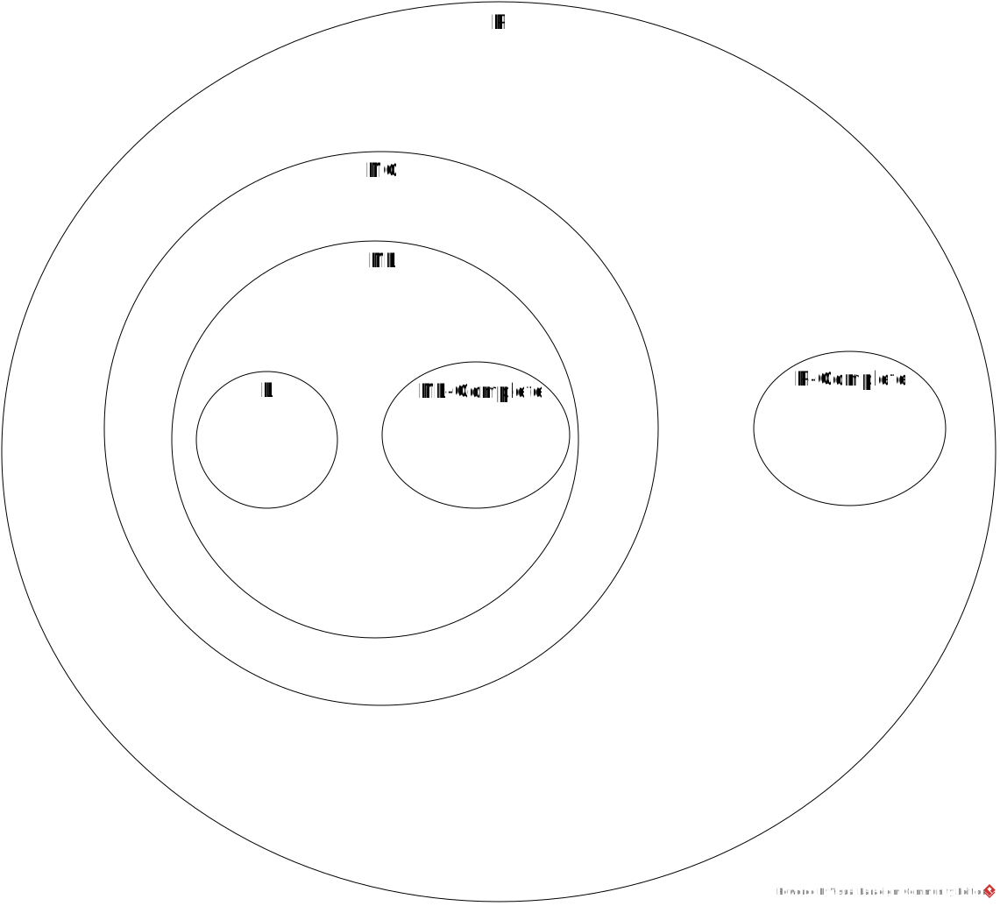

P: the class of problems that can be decided by deterministic Turing machines in polynomial time
P-Complete: the subclass of P problems to which all P problems reduce in logarithmic space
NC: the class of problems that can be decided by circuits of polynomial number of gates and
poly-logarithmic O(logkn) depth
NL: the class of problems that can be decided by nondeterministic Turing machines in logarithmic space
NL-Complete: the subclass of NL problems to which all NL problems reduce in logarithmic space
L: the class of problems that can be decided by deterministic Turing machines in logarithmic space
In the following,
X ⊂ Y means X is a proper subset of Y, i.e., X ⊆ Y but X ≠ Y.
Proven Facts
L ⊆ NL ⊆ NC ⊆ P
Conjectures
L ⊂ NL ⊂ NC ⊂ P
L ∩ NL-Complete = ∅
NC ∩ P-Complete = ∅